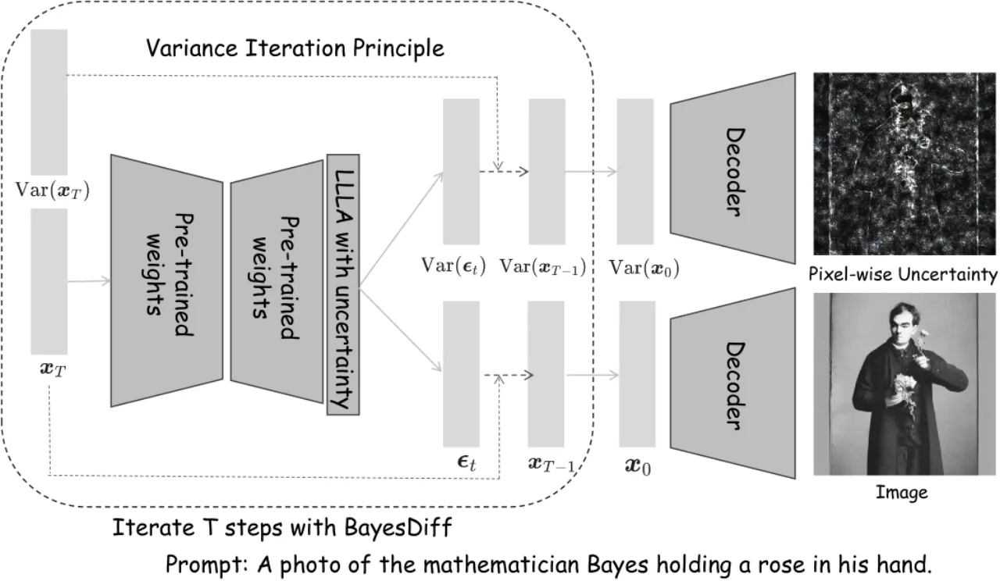
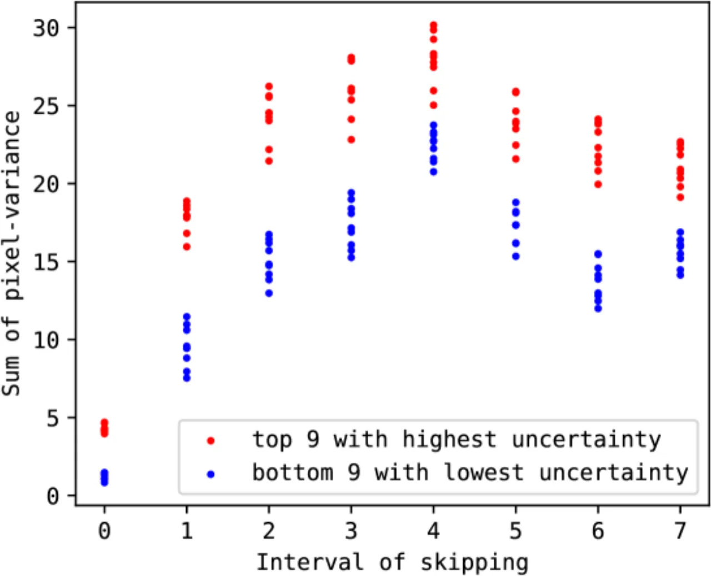
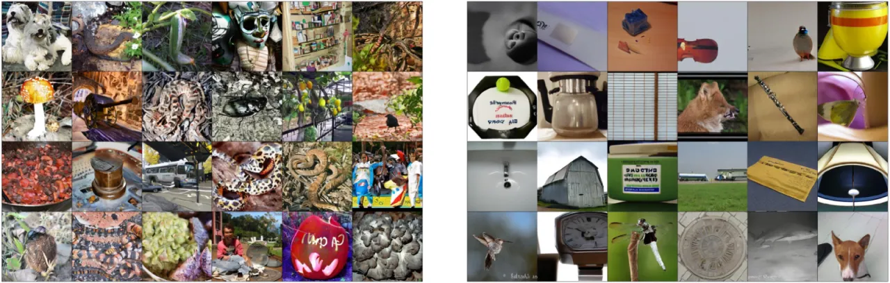
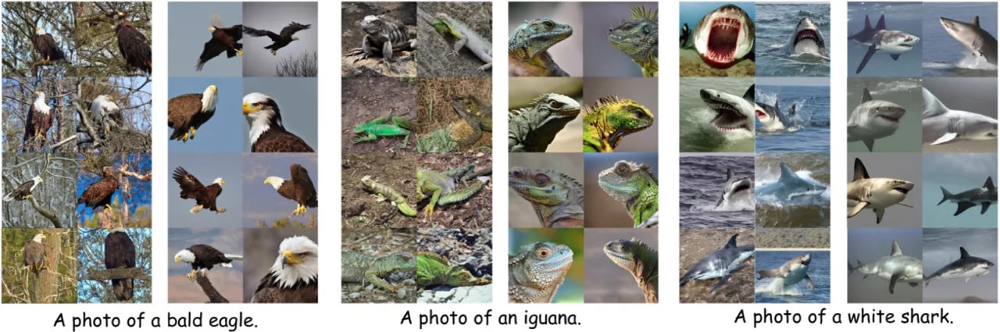
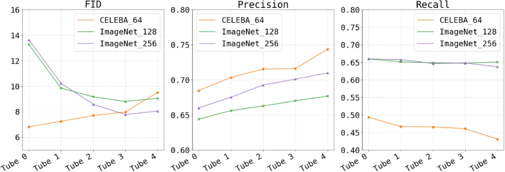

扩散模型在图像生成上表现优异，但仍会产生质量低劣的样本，而现有方法难以在单样本层面识别它们。BayesDiff 将 Bayesian inference 引入预训练扩散模型，推导出 uncertainty iteration 原理，估计每个像素的不确定性，从而实现低质量图像过滤、多样性增强与 artifact 纠正。
扩散模型（diffusion models）在图像生成领域取得了令人瞩目的成就，但其生成过程并不总是可靠：即使是同一个模型，也会产生质量参差不齐的样本，包括语义混乱、artifact 明显或与文本 prompt 不符的图像。现有评估指标（如 FID、Inception Score）只能衡量整体分布质量，无法针对单张图像做出判断，这使得低质量图像的识别与过滤几乎无从下手。
"Bayesian uncertainty has long been used to identify data far from the manifold of training samples — the posterior delivers low uncertainty for training-like data and high uncertainty for others."
作者将 Bayesian uncertainty 的这一特性迁移到扩散模型的生成过程中：如果一张生成图像的像素分布偏离训练数据的流形，则该像素对应的不确定性应当更高。基于这一直觉，BayesDiff 建立了一套从 Bayesian inference 出发、跟踪整个反向扩散链（reverse diffusion chain）中不确定性传播的理论框架。

BayesDiff 在不改动预训练扩散模型权重的前提下，通过两个核心组件实现逐像素不确定性估计：（1）Last-Layer Laplace Approximation (LLLA) 将噪声预测网络的最后一层替换为贝叶斯线性层，以高效方式获得像素级方差预测；（2）Uncertainty Iteration Principle 推导出在整个反向扩散链中方差如何逐步传播的解析公式。

标准 Laplace approximation 对完整神经网络的 Hessian 进行近似，计算代价极高。LLLA 只对最后一层（线性输出层）应用 Laplace 近似，将后验近似为 Gaussian：参数均值为预训练权重，协方差由 Generalized Gauss-Newton (GGN) 矩阵给出。推理时，对最后一层权重 marginalize 后可得到像素级输出分布，从而获得逐像素的预测方差 Var(ε̂_t)。此步骤只需在训练集上一次性计算 GGN 矩阵，与扩散模型的生成步骤解耦。
在标准 DDPM/DDIM 框架中，x_{t-1} 由 x_t 和预测噪声 ε̂_t 通过确定性或随机公式计算而来。BayesDiff 将此过程视为一个随机变量的线性传播，推导出方差传播的解析公式（论文 Equation 8）：
Var(x_{t-1}) = (1−f(t))² Var(x_t) − (1−f(t))g(t)²/σ_t · Cov(x_t, ε_t) + g(t)⁴/σ_t² · Var(ε_t) + g(t)² · 𝟏
其中 Cov(x_t, ε_t) 通过 Monte Carlo 采样估计（Equation 11），整个传播过程从 t=T 运行到 t=0，最终得到生成图像 x_0 的逐像素 variance 图。
完整算法在每个去噪步骤都需要额外的 Monte Carlo 采样来估计协方差，计算开销较大（超过 S>10 次额外模型前向）。BayesDiff-Skip 只在预先选定的若干关键步骤上执行不确定性计算，其余步骤跳过，从而实现"5× reduction in running time"，同时保持对样本质量排序的高度一致性（如图 2 所示）。
实验在 ImageNet 256×256（U-ViT）、ImageNet 128×128（ADM，DDIM/DPM-Solver）和 CELEBA 等数据集上进行，覆盖条件生成与无条件生成场景；文本到图像实验使用 Stable Diffusion v1.4。评估指标包括 FID、Precision、Recall。核心任务分为三类：低质量图像过滤、多样性增强（diversity augmentation）与 artifact 纠正。
从 50,000 张生成图像中，按不确定性排序，过滤掉 top 16% 高不确定性样本，再评估剩余图像的 FID 与 Precision。
| 模型 / 数据集 | 采样器 | FID（过滤前） | FID（过滤后） | Precision（前→后） |
|---|---|---|---|---|
| U-ViT ImageNet 256 | DDIM | 7.24±0.02 | 6.81 | 0.698 → 0.705 |
| ADM ImageNet 128 | DDIM | 8.68±0.04 | 8.48 | 0.661 → 0.665 |
| ADM ImageNet 128 | DPM-Solver | 9.77±0.03 | 9.67 | 0.657 → 0.659 |


在 t=40 时对高不确定性区域重采样（resampling from estimated distributions），可在保留低不确定性区域结构的前提下产生多样化变体。对于 artifact 明显的失败样本，同样通过局部重采样实现纠正，使输出与 prompt 语义一致。

像素级不确定性图揭示了有意义的语义结构：在 CELEBA 人脸数据集上，不确定性集中于眼睛、鼻子、嘴巴等面部特征；在 Stable Diffusion 输出中，不确定性聚集于物体轮廓。消融实验验证了 LLLA 比全参数 Laplace 更高效且性能相当，以及 BayesDiff-Skip 的步骤选择策略的鲁棒性。
基础算法在每个去噪步骤需要超过 S>10 次额外的模型前向传播用于 Monte Carlo 协方差估计，整体计算量显著高于标准扩散采样。BayesDiff-Skip 虽然实现了 5× 加速，但仍需额外开销，在大分辨率或实时生成场景中仍受限。
方法假设 x_t 在每个时间步近似服从正态分布，并以估计的均值和方差表征其分布。这一假设在早期去噪阶段（噪声较多时）较为合理，但在后期阶段（x_t 已接近真实图像分布）可能存在较大偏差。
LLLA 和方差传播均采用对角协方差假设，忽略了不同像素之间的空间相关性。这意味着方法无法建模大范围结构性不一致，而仅能捕获逐像素的独立不确定性。
Last-Layer Laplace Approximation 仅对网络最后一线性层应用贝叶斯处理，中间层的参数不确定性被完全忽略。这是一种权衡计算效率的近似，可能低估总体模型不确定性。
不确定性估计的质量依赖于 GGN 矩阵的准确计算，而 GGN 矩阵由训练数据决定。对于 out-of-distribution 的生成 prompt，或当测试时分布与训练分布差异较大时，不确定性估计的可靠性尚不明确。